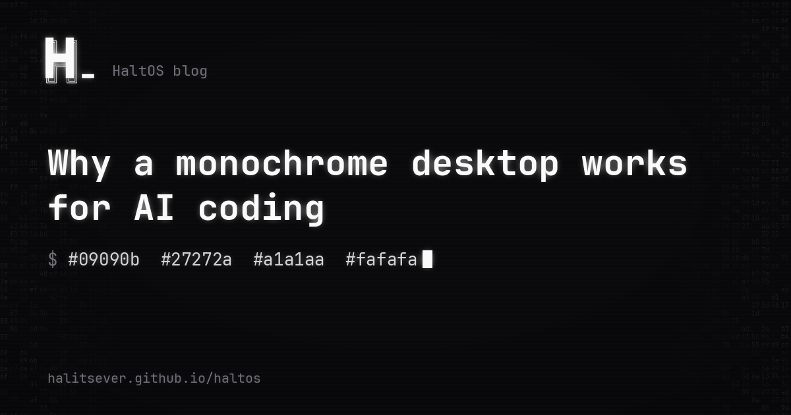

Why a monochrome desktop works for AI coding

Working with coding agents changes what you do at the screen. You type less and read more: diffs, test output, the agent's reasoning, three panes at once. HaltOS is designed around that, and the most visible result is that it has no colour.
Attention is the scarce resource
Every coloured badge, gradient and accent on a desktop competes for attention. When four agents are printing output side by side, the desktop chrome should be the quietest thing on the screen. A single neutral palette makes the panes, not the panel, the brightest objects you can see.
One palette, a handful of tokens
HaltOS takes shadcn's zinc scale: #09090b for backgrounds, #fafafa for text, #27272a for borders and #a1a1aa for secondary text. Selection, hover and focus are steps on the same grey scale. The primary colour is simply white, so a pressed button or a checked box turns white with dark text, and tooltips invert to dark text on white.
Colour where it carries meaning
Monochrome is not the same as colourless. Red, amber and green stay for errors, warnings and success, in the terminal and in widgets, because there they mean something. Syntax highlighting stays too. The rule is that colour has to earn its place by carrying information.
One typeface
JetBrains Mono is used everywhere, including menus and titlebars. Code, terminal output and interface text then line up and read the same way, and the desktop looks like the tool it is.
Character without noise
Monochrome can feel cold, so HaltOS puts its personality into places you only see in passing: an ASCII wordmark, a boot log on the splash screen, a blinking block cursor, and a wallpaper that says shutdown -h never.
See it in motion on the HaltOS website.
All posts Next: Self-updating shell scripts without the footguns